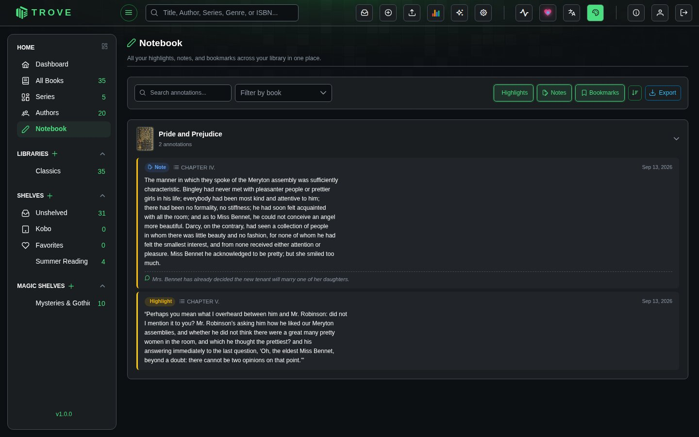

Notebook
The Notebook gathers every highlight, note and bookmark you've made, in every book, on one page. Open it from Notebook in the sidebar.
Overview

Annotations are grouped by book. Each book section shows a thumbnail, title, and annotation count, and can be collapsed or expanded. Individual entries display the annotation type (colored badge), chapter name, content, and creation date.
Annotation Types
| Type | Badge | Description |
|---|---|---|
| Highlight | Yellow | Text passages you highlighted in the EPUB reader |
| Note | Blue | Notes on a passage in the eBook reader, or on a page in the comic reader |
| Bookmark | Green | Positions you bookmarked in any reader |
Filtering & Search
The toolbar at the top offers several ways to narrow down your annotations:
- Search text input filters annotations by content (with a short debounce)
- Filter by book dropdown lets you scope to a single book
- Type toggles (Highlights, Notes, Bookmarks) can be toggled independently to show or hide each type
All filters can be combined. For example, show only highlights from a specific book that match a search term.
Sorting
A sort toggle switches between:
- Newest first (default) sorted by creation date descending
- Oldest first sorted by creation date ascending
Export
Click the Export button to download all matching annotations as a Markdown file (notebook-export.md). The export respects your active filters, so you can export just the highlights from one book, or everything at once.
The exported file includes:
- Entries grouped by book title
- Chapter headings where available
- Highlighted text in blockquote format
- Associated notes with a "Note:" prefix
The export button is disabled when there are no entries to export.
Pagination
Results are paginated with a default page size of 50. You can switch to 25 or 100 entries per page. The paginator only appears when total results exceed the page size.